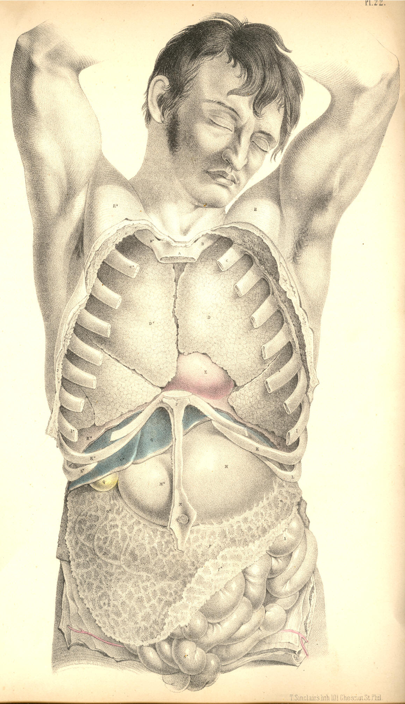

SURGICAL ANATOMY by JOSEPH MACLISE
COMMENTARY ON PLATE 22.
THE RELATIVE POSITION OF THE SUPERFICIAL ORGANS OF THE THORAX AND
ABDOMEN.
In the osseous skeleton, the thorax and abdomen constitute a common
compartment. We cannot, while we contemplate this skeleton, isolate the
one region from the other by fact or fancy. The only difference which I
can discover between the regions called thorax and abdomen, in the
osseous skeleton, (considering this body morphologically,) results,
simply, from the circumstance that the ribs, which enclose thoracic
space, have no osseous counterparts
in the abdomen enclosing abdominal
space, and this difference is merely histological. In man and the
mammalia the costal arches hold relation with the pulmonary organs, and
these costae fail at that region where the ventral organs are located.
In birds, and many reptiles, the costal arches enclose the common
thoracico-abdominal region, as if it were a common pulmonary region. In
fishes the costal arches enclose the thoracico-abdominal region, just as
if it were a common abdominal region. I merely mention these general
facts to show that costal enclosure does not actually serve to isolate
the thorax from the abdomen in the lower classes of animals; and on
turning to the human form, I find that this line of separation between
the two compartments is so very indefinite, that, as pathologists, we
are very liable to err in our diagnosis between the diseased and the
healthy organs of either region, as they lie in relation with the
moveable diaphragm or septum in the living body. The contents of the
whole trunk of the body from the top of the sternum to the perineum are
influenced by the respiratory motions; and it is most true that the
diaphragmatic line, H F H*, is alternately occupied by those organs
situated immediately above and below it during the performance of these
motions, even in health.
The organs of the thoracic region hold a certain relation to each other
and to the thoracic walls. The organs of the abdomen hold likewise a
certain relation to each other and to the abdominal parietes. The organs
of both the thorax and the abdomen have a certain relation to each
other, as they lie above and below the diaphragm. In dead nature these
relations are fixed and readily ascertainable, but in living, moving
nature, the organs influence this relative position, not only of each
other, but also of that which they bear to the cavities in which they
are contained. This change of place among the organs occurs in the
normal or healthy state of the living body, and, doubtless, raises some
difficulty in the way of our ascertaining, with mathematical precision,
the actual state of the parts which we question, by the physical signs
of percussion and auscultation. In disease this change of place among
these organs is increased, and the difficulty of making a correct
diagnosis is increased also in the same ratio. For when an emphysematous
lung shall fully occupy the right thoracic side from B to L, then G, the
liver, will protrude considerably into the abdomen beneath the right
asternal ribs, and yet will not be therefore proof positive that the
liver is diseased and abnormally enlarged. Whereas, on the other hand,
when G, the liver, is actually diseased, it may occupy a situation in
the right side as high as the fifth or sixth ribs, pushing the right
lung upwards as high as that level; and, therefore, while percussion
elicits a dull sound over this place thus occupied, such sound will not
be owing to a hepatized lung, but to the absence of the lung caused by
the presence of the liver.
In the healthy adult male body, Plate 22, the two lungs, D D*, whilst in
their ordinary expanded state, may be said to range over all that region
of the trunk of the body which is marked by the sternal and asternal
ribs. The heart, E, occupies the thoracic centre, and part of the left
thoracic side. The heart is almost completely enveloped in the two
lungs. The only portion of the heart and pericardium, which appears
uncovered by the lung on opening the thorax, is the base of the right
ventricle, E, situated immediately behind the lower end of the sternum,
where this bone is joined by the cartilages of the sixth and seventh
ribs. The lungs range perpendicularly from points an inch above B, the
first rib, downwards to L, the tenth rib, and obliquely downwards and
backwards to the vertebral ends of the last ribs. This space varies in
capacity, according to the degree in which the lungs are expanded within
it. The increase in thoracic space is attained, laterally, by the
expansion of the ribs, C I; and vertically, by the descent of the
diaphragm, H, which forces downwards the mass of abdominal viscera. The
contraction of thoracic space is caused by the approximation of all the
ribs on each side to each other; and by the ascent of the diaphragm. The
expansion of the lungs around the heart would compress this organ, were
it not that the costal sides yield laterally while the diaphragm itself
descends. The heart follows the ascent and descent of the diaphragm,
both in ordinary and forced respiration.
But however much the lungs vary in capacity, or the heart as to position
in the respiratory motions, still the lungs are always closely applied
to the thoracic walls. Between the pleura costalis and pulmonalis there
occurs no interval in health. The thoracic parietes expand and contract
to a certain degree; and to that same degree, and no further, do the
lungs within the thorax expand and contract. By no effort of expiration
can the animal expel all the air completely from its lungs, since by no
effort of its own, can it contract thoracic space beyond the natural
limit. On the other hand, the utmost degree of expansion of which the
lungs are capable, exactly equals that degree in which the thoracic
walls are dilatable by the muscular effort; and, therefore, between the
extremes of inspiration and expiration, the lungs still hold closely
applied to the costal parietes. The air within the lungs is separated
from the air external to the thorax, by the thoracic parietes. The air
within and external to the lungs communicate at the open glottis. When
the glottis closes and cuts off the communication, the respiratory act
ceases--the lungs become immovable, and the thoracic walls are (so far
as the motions of respiration are concerned) rendered immovable also.
The muscles of respiration cannot, therefore, produce a vacuum between
the pulmonic and costal pleura, either while the external air has or has
not access to the lungs. Upon this fact the mechanism of respiration
mainly depends; and we may see a still further proof of this in the
circumstance that, when the thoracic parietes are pierced, so as to let
the external air into the cavity of the pleura, the lung collapses and
the thoracic side ceases to exert an expansile influence over the lung.
When in cases of fracture of the rib the lung is wounded, and the air of
the lung enters the pleura, the same effect is produced as when the
external air was admitted through an opening in the side.
When serous or purulent effusion takes place within the cavity of the
pleura, the capacity of the lung becomes lessened according to the
quantity of the effusion. It is more reasonable to expect that the soft
tissue of the lung should yield to the quantity of fluid within the
pleural cavity, than that the rigid costal walls should give way
outwardly; and, therefore, it seldom happens that the practitioner can
discover by the eye any strongly-marked difference between the thoracic
walls externally, even when a considerable quantity of either serum,
pus, or air, occupies the pleural sacs.
In the healthy state of the thoracic organs, a sound characteristic of
the presence of the lung adjacent to the walls of the thorax may be
elicited by percussion, or heard during the respiratory act through the
stethoscope, over all that costal space ranging anteriorly between B,
the first rib, and I K, the eight and ninth ribs. The respiratory murmur
can be heard below the level of these ribs posteriorly, for the lung
descends behind the arching diaphragm as far as the eleventh rib.
When fluid is effused into the pleural cavity, the ribs are not moved by
the intercostal muscles opposite the place occupied by the fluid, for
this has separated the lung from the ribs. The fluid has compressed the
lung; and in the same ratio as the lung is prevented from expanding, the
ribs become less moveable. The presence of fluid in the pleural sac is
discoverable by dulness on percussion, and, as might be expected, by the
absence of the respiratory murmur at that locality which the fluid
occupies. Fluid, when effused into the pleural sac, will of course
gravitate; and its position will vary according to the position of the
patient. The sitting or standing posture will therefore suit best for
the examination of the thorax in reference to the presence of fluid.
Though the lungs are closely applied to the costal sides at all times in
the healthy state of these organs, still they slide freely within the
thorax during the respiratory motions--forwards and backwards--over the
serous pericardium, E, and upwards and downwards along the pleura
costalis. The length of the adhesions which supervene upon pleuritis
gives evidence of the extent of these motions. When the lung becomes in
part solidified and impervious to the inspired air, the motions of the
thoracic parietes opposite to the part are impeded. Between a solidified
lung and one which happens to be compressed by effused fluid it requires
no small experience to distinguish a difference, either by percussion or
the use of the stethoscope. It is great experience alone that can
diagnose hydro-pericardium from hypertrophy of the substance of the
heart by either of these means.
The thoracic viscera gravitate according to the position of the body.
The heart in its pericardial envelope sways to either side of the
sternal median line according as the body lies on this or that side. The
two lungs must, therefore, be alternately affected as to their capacity
according as the heart occupies space on either side of the thorax. In
expiration, the heart, E, is more uncovered by the shelving edges of the
lungs than in inspiration. In pneumothorax of either of the pleural sacs
the air compresses the lung, pushes the heart from its normal position,
and the space which the air occupies in the pleura yields a clear hollow
sound on percussion, whilst, by the ear or stethoscope applied to a
corresponding part of the thoracic walls, we discover the absence of the
respiratory murmur.
The transverse diameter of the thoracic cavity varies at different
levels from above downwards. The diameter which the two first ribs, B
B*, measure, is the least. That which is measured by the two eighth
ribs, I I*, is the greatest. The perpendicular depth of the thorax,
measured anteriorly, ranges from A, the top of the sternum, to F, the
xyphoid cartilage. Posteriorly, the perpendicular range of the thoracic
cavity measures from the spinous process of the seventh cervical
vertebra above, to the last dorsal spinous process below. In full,
deep-drawn inspiration in the healthy adult, the ear applied to the
thoracic walls discovers the respiratory murmur over all the space
included within the above mentioned bounds. After extreme expiration, if
the thoracic walls be percussed, this capacity will be found much
diminished; and the extreme limits of the thoracic space, which during
full inspiration yielded a clear sound, indicative of the presence of
the lung, will now, on percussion, manifest a dull sound, in consequence
of the absence of the lung, which has receded from the place previously
occupied.
Owing to the conical form of the thoracic space, the apex of which is
measured by the first ribs, B B*, and the basis by I I*, it will be seen
that if percussion be made directly from before, backwards, over the
pectoral masses, R R*, the pulmonic resonance will not be elicited. When
we raise the arms from the side and percuss the thorax between the folds
of the axillae, where the serratus magnus muscle alone intervenes
between the ribs and the skin, the pulmonic sound will answer clearly.
At the hypochondriac angles formed between the points F, L, N, on either
side the lungs are absent both in inspiration and expiration.
Percussion, when made over the surface of the angle of the right side,
discovers the presence of the liver, G G*. When made over the median
line, and on either side of it above the umbilicus, N, we ascertain the
presence of the stomach, M M*. In the left hypochondriac angle, the
stomach may also be found to occupy this place wholly.
Beneath the umbilicus, N, and on either side of it as far outwards as
the lower asternal ribs, K L, thus ranging the abdominal parietes
transversely, percussion discovers the transverse colon, O, P, O*. The
small intestines, S S*, covered by the omentum, P*, occupy the
hypogastric and iliac regions.
The organs situated within the thorax give evidence that they are
developed in accordance to the law of symmetry. The lungs form a pair,
one placed on either side of the median line. The heart is a double
organ, formed of the right and left heart. The right lung differs from
the left, inasmuch as we find the former divided into three lobes, while
the latter has only two. That place which the heart now occupies in the
left thoracic side is the place where the third or middle lobe of the
left lung is wanting. In the abdomen we find that most of its organs are
single. The liver, stomach, spleen, colon, and small intestine form a
series of single organs: each of these may be cleft symmetrically. The
kidneys are a pair.
The extent to which the ribs are bared in the figure Plate 22, marks
exactly the form and transverse capacity of the thoracic walls. The
diaphragm, H H*, has had a portion of its forepart cut off, to show how
it separates the thin edges of both lungs above from the liver, G, and
the stomach, M, below. These latter organs, although occupying abdominal
space, rise to a considerable height behind K L, the asternal ribs, a
fact which should be borne in mind when percussing the walls of the
thorax and abdomen at this region.
DESCRIPTION OF PLATE 22.
A. Upper bone of the sternum.
B B*. Two first ribs.
C C*. Second pair of ribs.
D D*. Right and left lungs.
E. Pericardium, enveloping the heart--the right ventricle.
F. Lower end of the sternum.
G G*. Lobes of the liver.
H H*. Right and left halves of the diaphragm in section. The right half
separating the right lung from the
liver; the left half separating
the left lung from the broad cardiac end
of the stomach.
I I*. Eighth pair of ribs.
K K*. Ninth pair of ribs.
L L*. Tenth pair of ribs.
M M*. The stomach; M, its cardiac bulge; M*, its pyloric extremity.
N. The umbilicus.
OO*. The transverse colon.
P P*. The omentum, covering the transverse colon and small intestines.
Q. The gall bladder.
R R*. The right and left pectoral prominences.
S S*. Small intestines.

Plate 22
COMMENTARY ON PLATE 23